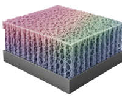
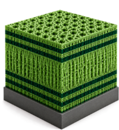

A porous-silicon biosensor reports every binding event as a small shift of its reflectance spectrum — often smaller than one spectrometer pixel. How that shift is turned into a sensogram decides the detection limit, the baseline noise, and whether the result can be read while the experiment is still running.
This page runs the four signal-processing methods compared in the manuscript — effective shift in wavelength (ESW), effective optical thickness (EOT), interferogram average over wavelength (IAW) and Morlet wavelet phase (MWP) — side by side on the same spectra, for single-layer films and multilayer microcavities alike.
Everything runs in this browser tab. Nothing is uploaded.
White light reflects from the top of the porous film and from each interface inside it, and the returns interfere. As analyte fills the pores, the effective refractive index n rises, the effective optical thickness EOT = 2nL grows while the physical thickness L stays fixed, and the whole spectrum red-shifts. A change of amplitude, or a uniform offset with no shift, is not binding — it is noise every method has to reject.

One porous film is a Fabry–Pérot interferometer: evenly spaced fringes whose spacing is set by the optical thickness. Every maximum and minimum moves together.

Two Bragg mirrors around a defect layer open a narrow resonance dip inside the photonic stopband. Tracking that dip directly is limited by the spectrometer's resolution — about 1.5 nm in the near infrared.
Both panels are computed with a transfer-matrix model of the film; the binding shift is exaggerated so it can be seen at this scale.
Each method collapses a whole spectrum into one number per time point, and the series of those numbers is the sensogram. They differ in which part of the spectrum they read — a pair of pixels, the whole difference curve, a Fourier peak or a phase — and that choice decides what they are sensitive to. The traces come from the default synthetic microcavity run.
{{ mth.summary }}
There is no backend, no account and no database. Parsing, interpolation, FFT, wavelet convolution and every metric run in this page. Close the tab and the data is gone.
{{ rf.abbr }} — {{ rf.text }} {{ rf.doi }}
Code and data availability: to be linked on publication.
All four start from the same reflectance spectra and end with one number per time point. The figures below follow each one through its steps on a single porous layer, computed without noise and with the binding shift exaggerated, so every step can be seen. The sensogram at the bottom is the method's real output on the synthetic microcavity run.
{{ mth.summary }}
{{ mth.capA }}
{{ mth.capB }}
{{ rf.text }} {{ rf.doi }}
{{ z.body }}
Either zone accepts a ZIP archive, a folder's worth of two-column TXT / CSV / TSV / DAT files, or a single matrix file with wavelength in column one and one column per time point. Comma, tab, semicolon and whitespace delimiters are detected; comment lines beginning #, % or // and one optional header row are skipped; files are ordered by natural filename sort, so spectrum2 precedes spectrum10. Telling the page which film it is only sets the starting window and which reflectance feature the ESW wavelength snaps to — you can override both. Spectra are processed locally in this browser and are not uploaded.
{{ verdict }}
{{ paramsText }}
Time, raw ESW, smoothed ESW, IAW, RIFTS ΔEOT, Morlet ΔEOT, the simulated response and a warning column.
Data provenance — synthetic seed or the loaded file names and common grid — plus the spectral filter, reference spectrum, smoothing settings, EOT search window and phase-conversion mode.
Refined dominant EOT, peak amplitude and width, raw mean phase difference, applied phase-cycle correction and the confidence flag for every spectrum.
Every figure carries a save button in its toolbar — the download icon writes a 2× PNG of that figure exactly as shown, zoom and all. For a vector copy, print the page to PDF.